Did you know Leeke makes some of the best heat resistant synthetic doll wigs? On February 2nd, Leekeworld announced they were exiting the doll wig world and selling off their entire stock to start anew. Upsetting right? Not really.
These wigs we know and love did not start out as Leeke's. Many many moons ago, Leekeworld bought out Dollga's wig line. Leeke was a more of a doll maker than wig seller at this time, but they haven't released new dolls in a long time. The release of Rihael V2 in 2015 is the last doll release I see for them!
It is now Hannasu's time to shine over Leeke and Dollga. Leeke put all their products on sale for the month of Feburary, including their (extremely limited selection of) dolls! Perfect time for a fran hat to buy some lovely wigs at low prices.
I hesitated quite a bit on ordering and a lot of the wigs I wanted sold out before getting my order in. After a few of these discoveries, I finally caved and hit "BUY NOW!!!!!!".
The order total was $198 USD, including $23.36 in shipping. I chose k-packet over EMS. The box was shipped EMS and not k-packet. The postage on the box was 75700 KRW, approximately $53 USD. Leeke marked this package on the customs declaration as having 15 doll items (correct count) at the cost of $4.67 each.
Order date: February 9, shipping date: unknown, arrival: February 20, 2025

Here we have our birthday boi with the box! 4 wigs in this box are intended for him.
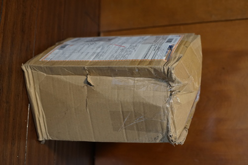If this box was not full of wigs, I would have cried.
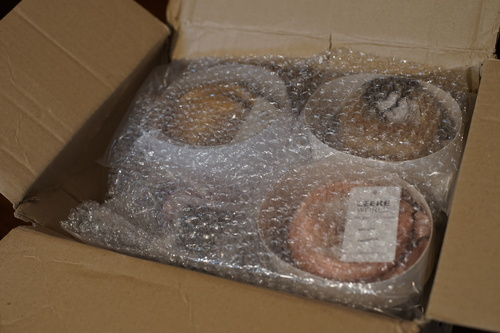 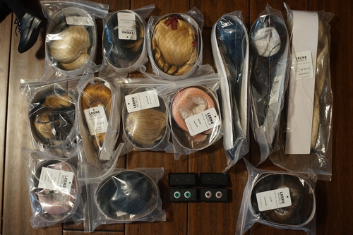I don't have any heads that take 16mm with me at this moment, so I apologize for not showing them in a head. Both pairs are flat back, have imperfections in the whites, and well placed pupils.
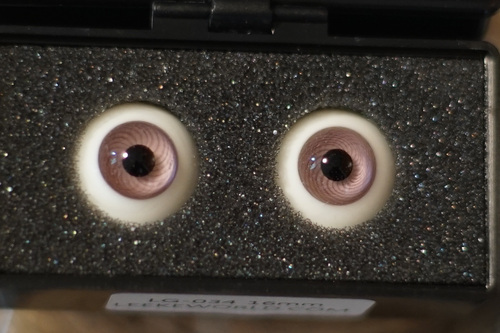LG-034 16mm - Intended for Rio. I finally ordered Rio the purple eyes I said I'd be ordering for like 3 years now. The color is not even close to the promo image, actually. I guess I'll have to start sending emails.
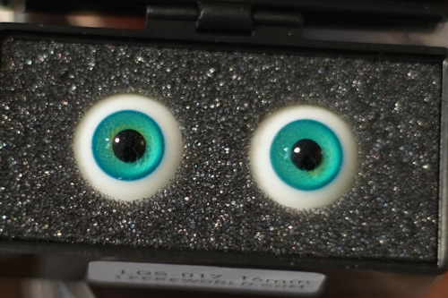LGS-017 16mm - Intended for Verona. These are closer in color than the last ones, but still pretty off.
Unlike Luts who exclusively uses white/beige caps, Leeke does not. I've noted the cap color of each wig, but there doesn't seem to be a way to guess for each wig in each color.
In a moment of confusion, I noticed all of the 8-9 wigs I bought included the letter "M" in their item code. After some research, it looks like Leeke uses S for 7-8, M for 8-9, and L for 9-10. This only lines up with their D, M, E, L size code in one instance and is extremely confusing in the other. This was an incredibly bad choice.
I own a few Leeke wigs, but they were all in the mousy brown tones. I like the fibers on them all quite a lot! Unforuntately, Leeke's fibers are not so consistent in quality between colors. I've noted on each wig my opinion if they are more shiny than I prefer. All wigs I've recieved from Luts have had perfect fiber sheen.
All wigs tags are marked "Made in China" on the back.
RollRoll - Intended for Praline. I don't have her with me, so you will have to wait to see this one. This one is too shiny.
Unforuntately, Leeke 8-9 does not fit on Hina. Some of them can be put on but have a high risk for popping off. All of them fit on Volta as shown. There's a very small size difference between their heads, but that is enough to make a huge difference.
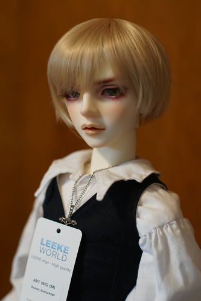Rowan (link already dead) Evecocktail - Intended for Liam and/or Verona. White cap. Very nice blonde with hints of pink. Extra image: [on Liam]
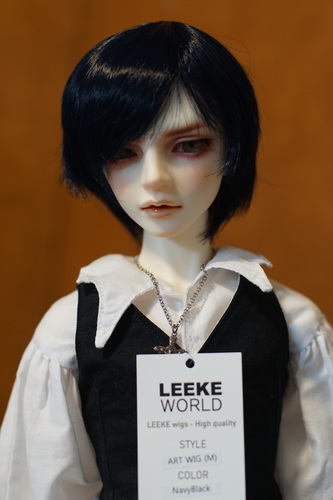NavyBlack (link already dead) - Intended for Volta. Black cap. Very shiny. Center hair circle on the side of the back of the head making it lumpy. Extra image: [off center skin part]
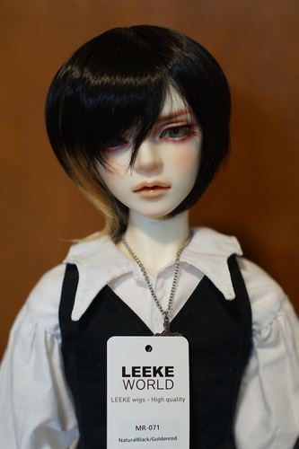LR-071 NaturalBlack/Goldenrod - Intended for Volta and/or Pafa. White cap. Black fiber is very shiny. Extra image: [on Cheby]
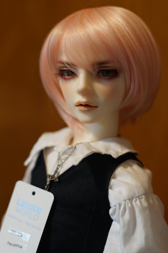LR-004 Peach Pink - Intended for Verona. White cap.

CuteRoll Champagne - Intended for Liam (teen). Beige cap. Extra images: [on Liam] [on Hina]
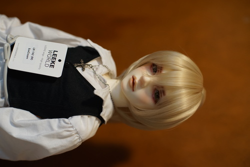LR-142 Evecream - Intended for Hina, dangerously tight on Hina. White cap. Theres a number of long hairs in the short wig. The ponytail is kept on with a clip around a section of hair in the back. Extra images: [side view], [on Hina]
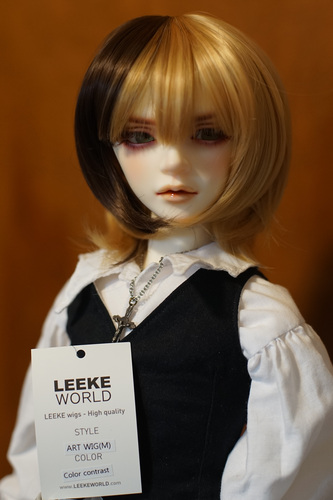Color contrast - Intended for Hina. With all my might, I cannot get this on Hina. Beige cap.
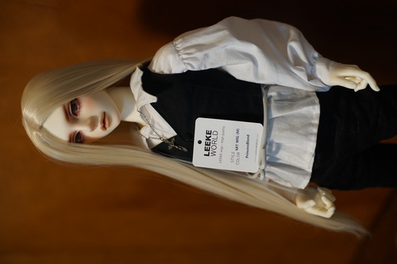PrincessBlond - Intended for Hina and does fit her due to an extra stretchy beige cap. Skin part is centered. Wefts are visible around the skin part. This blonde is shinier than evecream despite being very similar colors. Extra image: [on Hina]
I normally buy all my largie wigs in 8-9 because I want them to be able to share. Hina and Volta both have large Volks heads that are exactly or just over 9 inches, so I was willing to try this size for wigs for them that had already sold out. Turns out, SD Lieselotte needs all her Leeke wigs in 9-10.
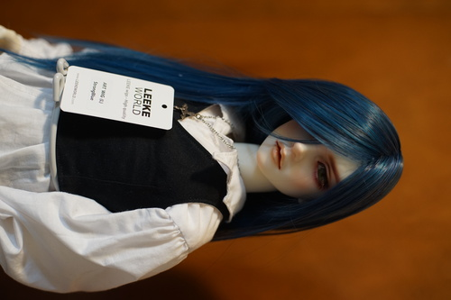StrongBlue - Intended for Volta and future Draven. White cap. A few unruly wefts are sewn into the bangs at the opposite angle. Extra image: [on Liam]
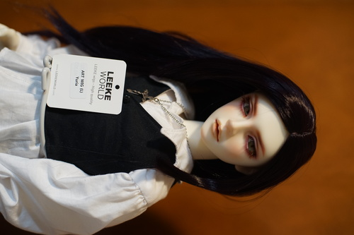Yuria - Intended for Volta. Beige cap. I did not expect it to be a very dark purple. Very shiny. The visible part leaves a lot to be desired, but it's not as noticeable in photos as it is in real life. Skin part is off center, to the doll's left. Extra image: [close up of skin cap]
Bought for my Dianna Effner Emily. I ripped off one of her eyelashes before putting the wigs on her. Images are linked because she is currently hideous and it is a jump scare. These are not marked as heat resistant on the site, but they feel like the same fiber as the heat resistant wigs.
LB-020_p ChocoBrown - The ponytails are very strange long wefts.
LB-001 Goldenrod - Wefts are wrapped around a strand of hair to make a pigtail.
I'm honestly disappointed that 1. I picked the wrong size for Hina, and 2. their fiber quality is hit or miss. I'm going to stick with Luts if I need more wigs rather than trying Hannasu. My big problem with Luts though is their EMS prices being well over actual EMS prices and being forced to use EMS. I honestly have enough wigs now though that I should be okay unless I buy another doll. I might try stretching the caps to see if I can get them to fit Hina.
Update: I posted a message on their QnA board about the difference in eye color on 2/22. After 2 weeks, I have not gotten a response. The last message responded to on their QnA board was 11/19/2024, so I do not expect to get a response.
Update 2: On April 4th, I noticed the QnA board is inaccessible. Please keep in mind that if Leeke comes back, they left with over a page of open issues. My issue was rather minor, so I will not pursue it with Paypal, but there were a few titles saying items were missing and mentioned shipping issues.
![[on Liam]](../img/boxopening/leeke25/CIA03999.jpg){kind=link}
![[off center skin part]](../img/boxopening/leeke25/CIA03971.jpg){kind=link}
![[on Cheby]](../img/boxopening/leeke25/CIA04002.jpg){kind=link}
![[on Liam]](../img/boxopening/leeke25/CIA03996.jpg){kind=link}
![[on Hina]](../img/boxopening/leeke25/CIA04004.jpg){kind=link}
![[side view]](../img/boxopening/leeke25/CIA03986.jpg){kind=link}
![[on Hina]](../img/boxopening/leeke25/CIA04005.jpg){kind=link}
![[on Hina]](../img/boxopening/leeke25/CIA04008.jpg){kind=link}
![[on Liam]](../img/boxopening/leeke25/CIA03995.jpg){kind=link}
![[close up of skin cap]](../img/boxopening/leeke25/CIA03991.jpg){kind=link}
![[full]](../img/boxopening/leeke25/CIA04010.jpg){kind=link}
![[detail]](../img/boxopening/leeke25/CIA04014.jpg){kind=link}
![[full]](../img/boxopening/leeke25/CIA04011.jpg){kind=link}
![[detail]](../img/boxopening/leeke25/CIA04013.jpg){kind=link}